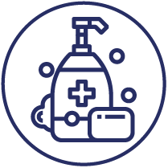
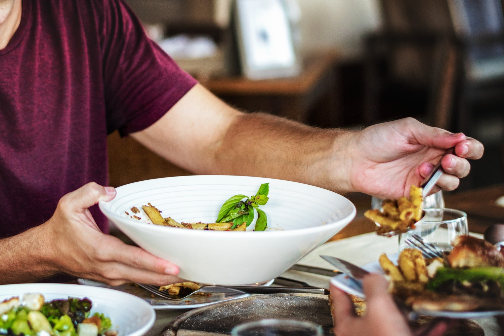
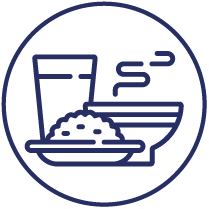
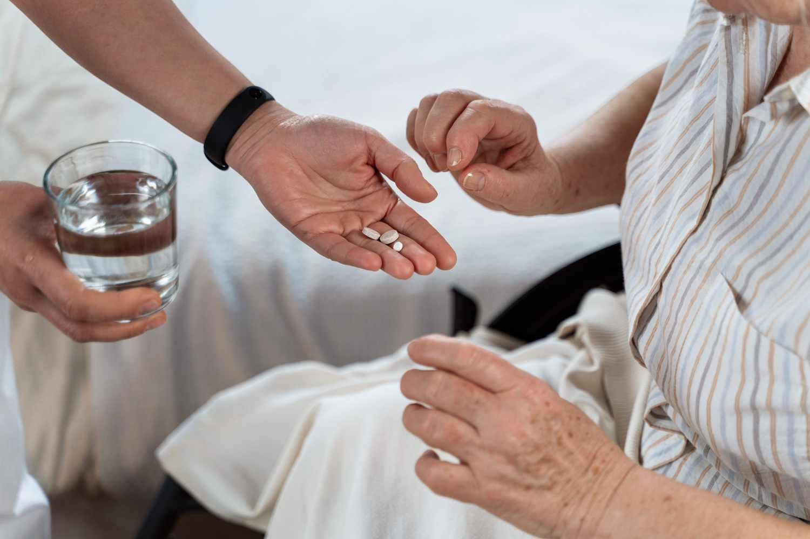
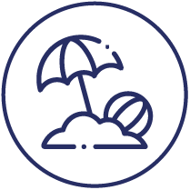
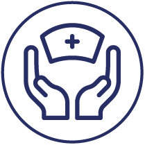

No Mundo de Afetos, acreditamos que cada pessoa merece viver com dignidade, conforto e segurança no seu próprio lar, independentemente das suas condições de saúde ou limitações físicas. Oferecemos um serviço personalizado, pensado para responder às necessidades específicas de cada cliente. Com mais de 25 anos de experiência na área da geriatria, o nosso compromisso é proporcionar conforto, segurança e bem-estar, assegurando um acompanhamento humano, digno e de qualidade, para que cada pessoa possa continuar a viver no seu espaço com tranquilidade.

Apoio nos cuidados de higiene diária, garantindo conforto, dignidade e bem-estar em todas as rotinas.


Preparação de refeições e realização de tarefas domésticas essenciais para o dia a dia.

Administração de medicação de acordo com prescrição médica, assegurando rigor e segurança.
Apoio em deslocações a consultas, exames ou sessões de fisioterapia, com acompanhamento dedicado.
Realização de compras de bens essenciais, como produtos alimentares e/ou de farmácia.

Acompanhamento em atividades de lazer, promovendo momentos de convívio e bem-estar.
Apoio contínuo diurno e noturno, com possibilidade de assistência imediata através de botão de pânico.

Prestação de cuidados de enfermagem por profissionais qualificados, assegurando acompanhamento clínico adequado.